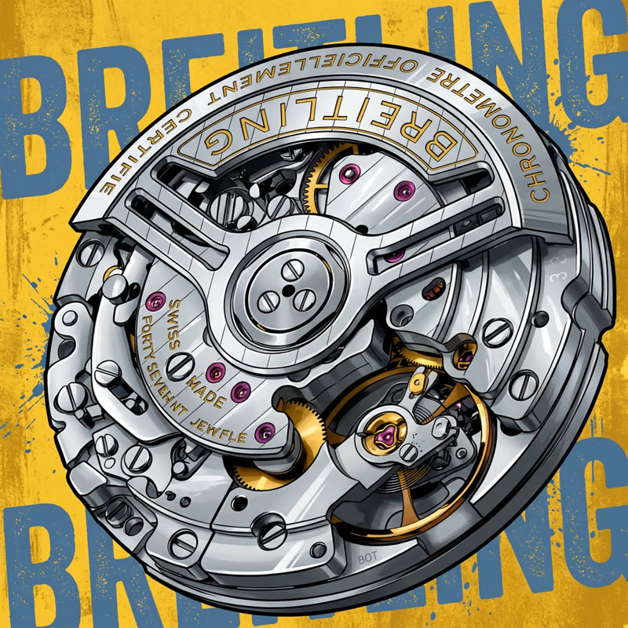
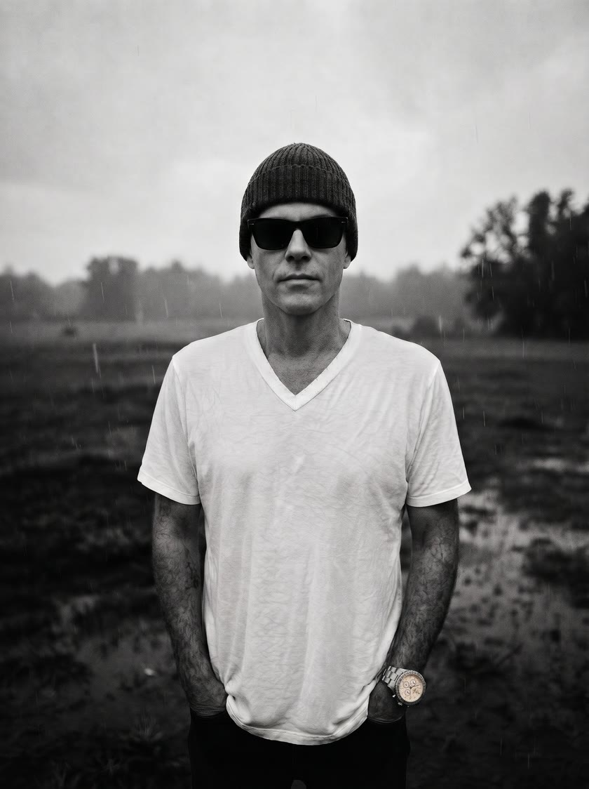
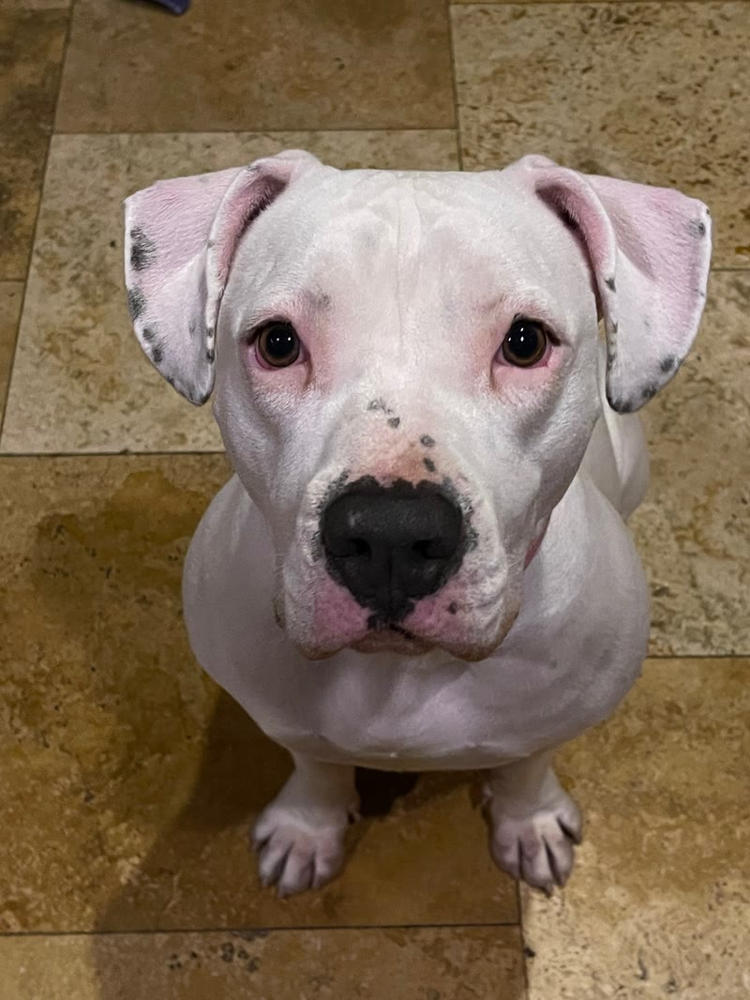

Art
Artwork
Art I live with — pictured here, a Breitling chronometer movement rendered in vibrant pop-art style, all silver gears, gold, and ruby detail on bold yellow.

Personal site · Austin, Texas
Retired, based in Austin, and spending this chapter on the good stuff — live music, great sushi, long walks with my dog Lola, keeping an eye on the markets, and learning how to build on the web with AI.
This site is my playground for that last part. It will change as I learn — that's the point.
— Austin, TX

Austin, Texas
Central TimeRetired
Since January 2026Sushi
No contestLola
My dog — see belowPlain and simple — no résumé, just the person.
I'm Chris Cabrera — Chris C. around here. I retired in January 2026 and I'm based in Austin. The goal now is straightforward: stay retired, enjoy it, and stay curious.
I follow investing closely — I like companies with more than one engine, which is why I've long favored Amazon's mix of businesses — and I love a live show. If there's a concert worth seeing, I'm probably tracking tickets for it.
And lately, I've gotten interested in AI as a hands-on tool, not just something to read about. I see this generation of AI helpers as the start of something big — especially for everyday life. So I'm learning by doing: building this website with AI, one change at a time, and seeing what sticks.
Three things you'll reliably find me doing.
Artwork
Art I live with — pictured here, a Breitling chronometer movement rendered in vibrant pop-art style, all silver gears, gold, and ruby detail on bold yellow.

Best walking buddy
My dog and daily walking partner — white coat with light speckling, dark tail with a white tip. Most of my best thinking happens on our walks around Austin, her in a black harness on a pink leash.

Home
Walks with Lola, time around the lake, and a morning look at the markets. I follow earnings and investor moves — retirement doesn't mean tuning out, it means choosing what to tune into.
This page isn't just about learning to build with AI — it's where it happens. Try the controls below: they really change this page.
No code needed to start. “Make the headline bigger” or “Add a section about Lola” is a real instruction.
AI rebuilds the page and you look at the result — on phone and desktop — like an editor, not a programmer.
Love it? Keep it. Don't? Say what feels off. Every round teaches you what to ask for next time.
Click a color. The accent, links, and small details across this whole page update instantly. This is exactly the kind of change you'd ask AI to make — here you can feel it yourself first.
Current: Shu-iro — Vermillion (#b3402a)
Want this as the permanent color? Just tell Muse: “Make the indigo the site's main color.”
Copy any of these and send it to Muse to change this site. Each one is a complete, real request.
Add a photo gallery of AustinMake a section for concerts I'm trackingAdd my favorite sushi spots in AustinMake the site feel more playfulThings this site could grow into — in no particular order. Pick one whenever you're ready.
November 2026 — a snapshot, not a schedule.
Building this site with AI. First version is live — now it's about iterating and learning what I like.
The markets, lightly. Earnings season and the names I follow — with the morning tracker paused by choice. No bad-news start to the day.
Daily walks with Lola around Austin — black harness, pink leash, head of morale on duty.
Sushi, whenever possible. Still the favorite. Still not close.
I retired on January 8, 2026 — and the plan is to stay retired.
I write about what I'm learning and the good stuff.
I retired in January and started learning to build on the web with AI. This site is where I practice.